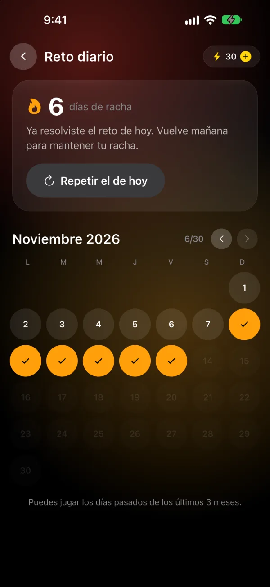
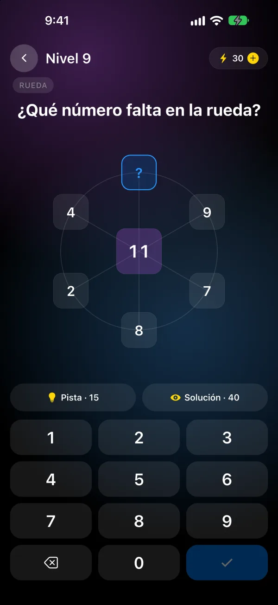
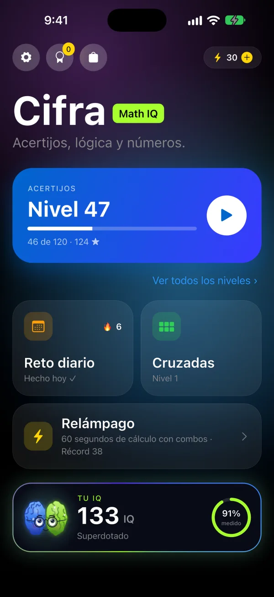
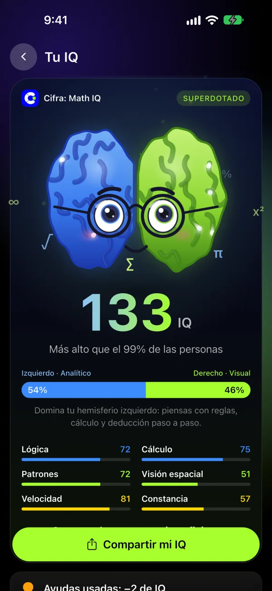
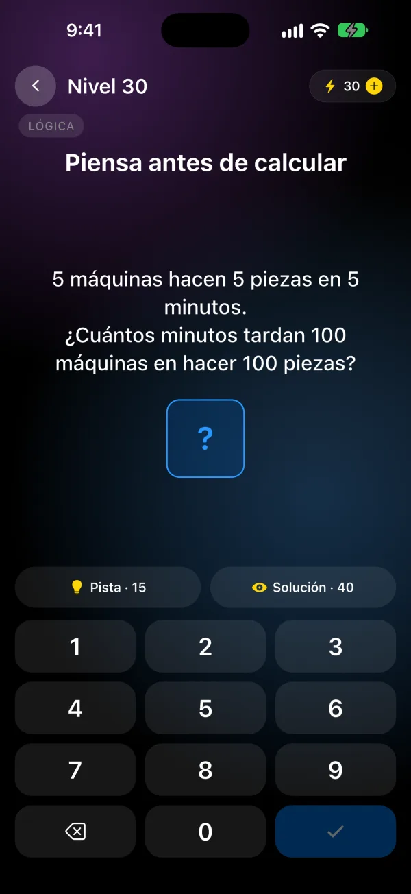
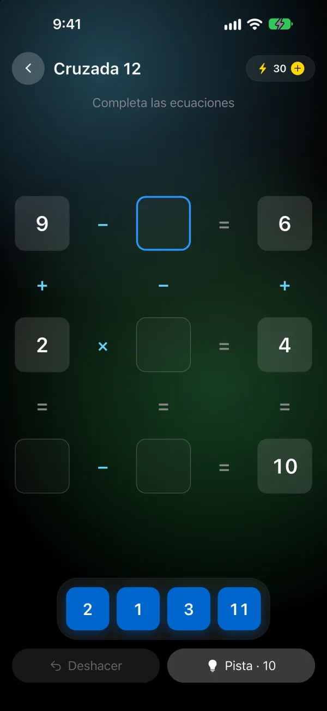
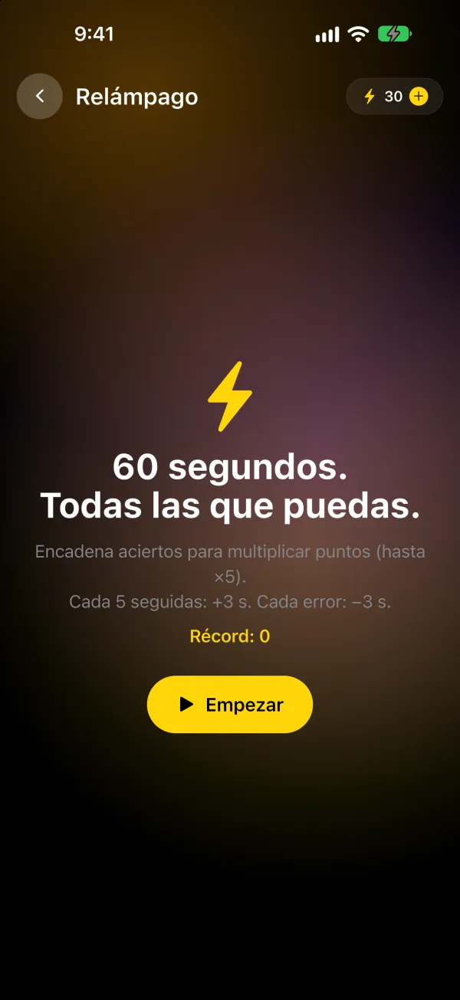
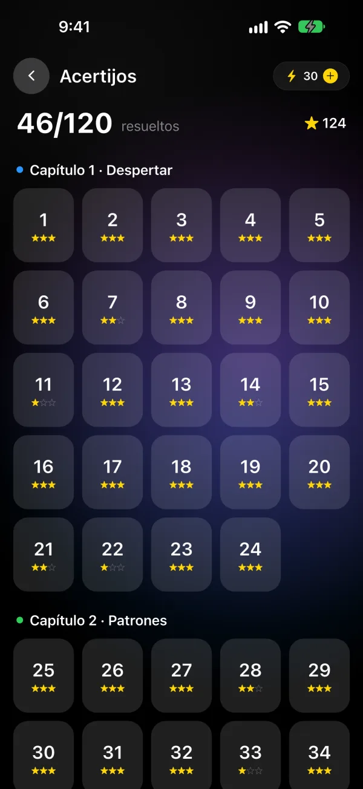
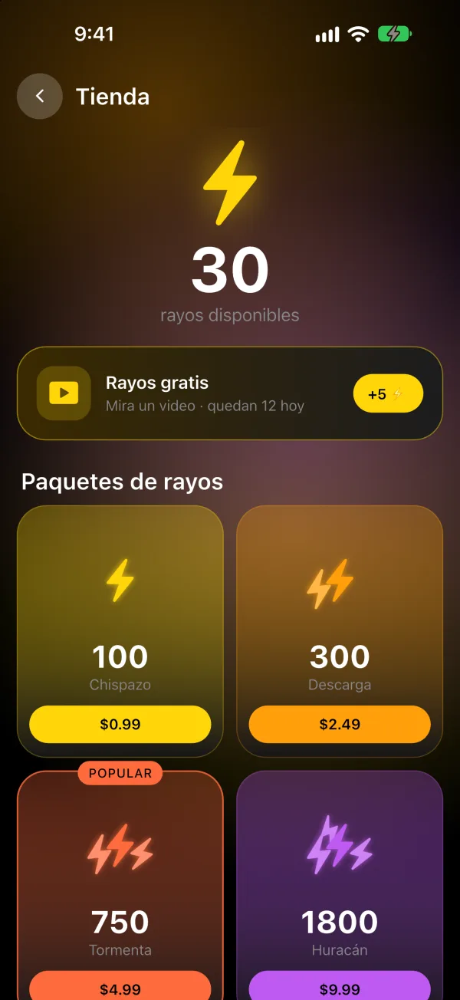

Reto diario
Un acertijo nuevo cada día. Mantén tu racha 🔥 y gana rayos extra cada 7 días.

Acertijos, lógica y números. Un juego que sí te pone a pensar y que mide tu IQ mientras juegas.
Gratis · Sin registro · Funciona sin conexión



Cada nivel esconde una regla. Descúbrela, escribe el número que falta y avanza. Sin trucos de memoria: aquí gana quien piensa.

Tu IQ sube o baja con cada nivel. Un cerebro animado, con ojos y lentes, te muestra qué hemisferio tienes más desarrollado y en qué eres mejor.
«¿Crees poder competir contra mi coeficiente intelectual?»Comparte tu tarjeta de IQ por WhatsApp, Telegram o donde quieras.
Cinco minutos en el camión o una hora en el sillón: siempre hay algo para tu cabeza.
Un acertijo nuevo cada día. Mantén tu racha 🔥 y gana rayos extra cada 7 días.

200 crucigramas de operaciones. Arrastra las fichas y cuadra todas las cuentas.

60 segundos, 4 opciones y combos hasta ×5. ¿Cuántas resuelves antes del cero?

Los rayos pagan pistas y soluciones. Se consiguen resolviendo bien, no repitiendo niveles. Si los necesitas ya, están en la tienda.
También puedes ver un video para ganar 5 rayos o quitar los anuncios para siempre con una sola compra.


Sí. Puedes jugar todos los niveles gratis. Hay anuncios y, si quieres, puedes comprar rayos o quitar los anuncios con una compra única.
Es una estimación divertida basada en cómo juegas: aciertos, estrellas, velocidad, constancia y ayudas usadas. No es una prueba psicológica ni un diagnóstico.
No. Cifra funciona sin conexión y sin registro. Solo se necesita internet para los anuncios y las compras.
En tu teléfono. No tenemos servidores con datos de jugadores. Si borras la app, se borra tu progreso; «Quitar anuncios» siempre se puede restaurar.
Para todo público. Los acertijos van de fáciles a muy difíciles, así que hay reto para chicos y grandes.
Descarga Cifra, resuelve y compártelo.